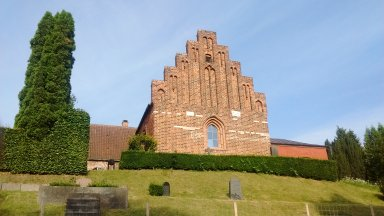

پیادهروی در لونگبو یا بنی آدم اعضای یکدیگرند؟

خانم میانسالی بود به قول ادبا میانهبالا (نسبتاً کوتاهقد) با کمی اضافه وزن. دو تا کیف در یک دست و بستهپستی بزرگی در دست دیگر. بسته بدباری بود و به وضوح برای حملش تقلا میکرد. سر خیابانی که میرسد به آپارتمان ما در لونگبو. به انگلیسی پرسیدم میتوانم کمکتان کنم؟ به دانمارکی چیزی گفت که نفهمیدم. دوباره سوالم را تکرار کردم با اشاره به بسته. با انگلیسی روان و بدون لهجهای تشکر کرد و اشاره کرد که کمک لازم نیست. از خیابان رد میشدم که بسته از دستش افتاد. برگشتم و کمکش کردم. راه زیادی نبود تا ایستگاه اتوبوس آنطرف خیابان. پرسید اهل کجایی؟ گفتم اصالتاً ایران. به فارسی گفت «عزیزم». به همان حالتی که دخترها به هم میگویند. توضیح داد که بهترین دوستم پرشین است. در توجیه سؤال قبلش هم گفت «فهمیدم دانمارکی نیستی. دانمارکیها به کسی پیشنهاد کمک نمیدهند». پرسیدم خودت کجایی هستی؟ لهستانی بود. سال نو را تبریک گفت و خداحافظی کرد.
با آیدا توی ایستگاه قطار هلهروپ بودیم. پدر و دختر گپ میزدیم به فارسی. مرد جوانی کمی نگاهمان کرد و به فارسی آدرس پرسید. لهجه آهنگین افغانی. متفاوت با ما که فارسی را خیلی خطی حرف میزنیم. آدرس را از گوگل مپ برایش پیدا کردم. میرفت دیدار دوستش در شهری شمالی. دو ساعتی راه بود با قطار و اتوبوس. گلایه میکرد که دوستم بعد از اینهمه محبتی که در حقش کردهام از جمله پیدا کردن کار، خودش نیامده اینجا و من را توی سرما کشانده خانهاش. یک تکه از مسیرمان یکی بود. گفت هشت سال است اینجا زندگی میکنم. گفتم جای بدی نیست به جز سرمای هوا. سری تکان و داد و گفت «و نژادپرستی».
با دوچرخه میرفتم دنبال آیدا. پشت سرم چیزی گفت بوم! برگشتم. آقای مسن و تپلمپلی پایش گیرگرده بود توی چالهچولههای فت و فراوان پیاده رو و زمین خورده بود. مستأصل نشسته بود روی زمین و به بخت بدش میخندید و سری تکان میداد به تأسف. دوچرخه را گذاشتم و کنارش نشستم. پرسیدم خوبی؟ به اورژانس زنگ بزنم؟ انگلیسی نمیفهمید. با اشاره گفت که خوب است و به چاله اشاره میکرد که یعنی تقصیر من نبود. به دانمارکی هم چیزکی گفت که نفهمیدم. دستش را گرفتم و بلندش کردم. انگشت شستش را نشان داد به نشانهٔ تشکر و من هم همانکار را کردم احتمالاً به نشانهٔ آرزوی سلامتی.